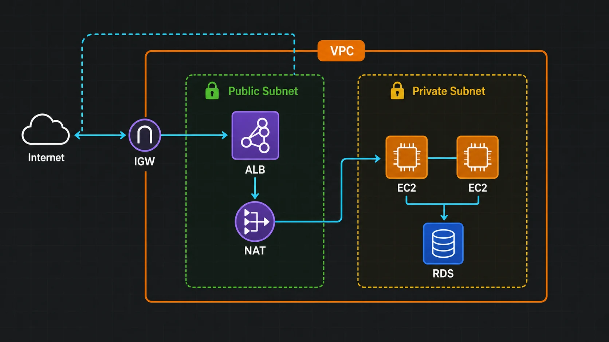

A2. SAA② 컴퓨팅·네트워킹
SAA-C03(2026 기준) 시험의 골격인 VPC 네트워킹과 컴퓨팅(EC2·Lambda·컨테이너) 선택 기준을 한 번에 정리합니다. 보안그룹 vs NACL, NAT vs IGW, VPC 엔드포인트, EC2 구매 옵션 4종, 서버리스·컨테이너 분기처럼 시험에서 반드시 1~2문항씩 나오는 단골을 다룹니다. SAA 도메인 비중상 복원력 26%·고성능 24% 영역의 핵심 토대이며, 보안그룹/서브넷 설계는 보안 아키텍처 30%와도 직결됩니다.

1. VPC 설계 기초 — CIDR·서브넷·라우팅·IGW
VPC(Virtual Private Cloud)는 AWS 계정 안에 갖는 "나만의 사설 네트워크 구획"입니다. 생성 시 CIDR 블록(예: 10.0.0.0/16 = 약 6.5만 개 IP)으로 주소 범위를 정하고, 그 안을 서브넷으로 더 잘게 나눕니다. 서브넷은 하나의 가용 영역(AZ)에 속하므로, 고가용성을 위해 보통 2개 이상 AZ에 서브넷을 둡니다.
💡 비유로 이해하기: 신도시 택지 개발
VPC는 분양받은 대형 택지 전체(10.0.0.0/16)입니다. 이걸 구역(서브넷)으로 나누는데, 큰길에 면해 외부 손님이 드나드는 상가 구역(퍼블릭 서브넷)과, 외부에서 직접 못 들어오는 주거 구역(프라이빗 서브넷)으로 용도를 나눕니다. 어느 길로 나갈지는 도로 표지판(라우팅 테이블)이 정하고, 택지에서 큰길(인터넷)로 나가는 정문이 인터넷 게이트웨이(IGW)입니다.
퍼블릭 서브넷과 프라이빗 서브넷의 진짜 차이는 "라우팅 테이블"입니다. 서브넷 자체에 public/private 속성 토글이 있는 게 아니라, 그 서브넷에 연결된 라우팅 테이블이 0.0.0.0/0 → IGW 경로를 가지면 퍼블릭, 없으면 프라이빗입니다.
| 구성 요소 | 역할 | 핵심 포인트 |
|---|---|---|
| CIDR 블록 | VPC/서브넷의 IP 범위 | /16(VPC) → /24(서브넷). AWS가 각 서브넷에서 앞 4개+마지막 1개 = 5개 IP는 예약 |
| 라우팅 테이블 | 패킷의 목적지별 경로 결정 | 서브넷의 public/private을 실질적으로 결정 |
| 인터넷 게이트웨이(IGW) | VPC ↔ 인터넷 양방향 통로 | VPC당 1개, 수평 확장·고가용 (관리형) |
| 퍼블릭 IP / 탄력적 IP(EIP) | 인터넷에서 도달 가능한 주소 | 퍼블릭 IPv4는 시간당 과금(2024 변경) |
✅ 핵심 정리
퍼블릭 서브넷의 인스턴스가 인터넷과 통신하려면 ① 라우팅 테이블에 IGW 경로 + ② 인스턴스에 퍼블릭 IP(또는 EIP) 두 가지가 모두 있어야 합니다. 둘 중 하나만 있으면 안 됩니다.
2. 아웃바운드와 NAT — 프라이빗이 인터넷에 나가는 법
프라이빗 서브넷의 EC2(예: 백엔드 서버)는 외부에서 직접 접속은 막되, 자기는 밖으로 나가야 할 때가 많습니다 — OS 패치 다운로드, 외부 API 호출 등. 이때 NAT Gateway를 퍼블릭 서브넷에 두고, 프라이빗 라우팅 테이블이 0.0.0.0/0 → NAT GW를 가리키게 합니다.
💡 비유로 이해하기: 사서함과 일방향 출입증
주거 구역(프라이빗) 주민은 외부에서 집 주소로 직접 못 찾아오지만, 본인이 상가 구역의 공용 우편 창구(NAT GW)를 통해 바깥으로 편지를 부치고 답장을 받을 수는 있습니다. 즉 나가는 건 되고, 외부가 먼저 들어오는 건 안 되는 일방향 통로입니다. 반면 IGW는 양방향 정문입니다.
| 구분 | IGW (인터넷 게이트웨이) | NAT Gateway |
|---|---|---|
| 방향 | 인바운드 + 아웃바운드 (양방향) | 아웃바운드 전용 (외부 시작 연결 차단) |
| 대상 | 퍼블릭 IP 가진 퍼블릭 서브넷 리소스 | 프라이빗 서브넷 리소스 |
| 위치 | VPC에 부착(1개) | 퍼블릭 서브넷에 배치(EIP 필요) |
| 비용 | 게이트웨이 자체는 무료 | 시간당 + 데이터 처리량 과금 |
| 가용성 | 관리형·고가용 | 단일 AZ 서비스 → AZ별로 배치해야 다중 AZ 복원력 |
⚠️ 자주 틀리는 함정
NAT Gateway는 반드시 퍼블릭 서브넷에 둬야 합니다(자기가 IGW로 나가야 하니까). 또 NAT GW는 한 AZ에 종속되므로, 그 AZ가 죽으면 다른 AZ의 프라이빗 서브넷 아웃바운드도 끊깁니다. 고가용성이 필요하면 AZ마다 NAT GW를 하나씩 두세요. (구형 NAT 인스턴스는 직접 관리·단일 장애점이라 시험·실무 모두 NAT Gateway 권장.)
3. 보안그룹(SG) vs 네트워크 ACL(NACL)
VPC의 2단 방화벽입니다. 보안그룹은 인스턴스(ENI) 레벨, NACL은 서브넷 레벨에서 트래픽을 거릅니다. 시험에서 가장 빈번한 비교 중 하나이고, "상태 저장(stateful) vs 무상태(stateless)"가 정답의 핵심입니다.
💡 비유로 이해하기: 건물 정문 경비 vs 각 사무실 도어락
NACL은 건물 정문 경비(서브넷 경계)로, 출입 금지 명단(거부 규칙)을 운영할 수 있고 들어온 사람과 나가는 사람을 따로따로 확인합니다(무상태). 보안그룹은 각 사무실 도어락(인스턴스)으로, "허락된 사람만" 통과시키되 들어온 손님은 나갈 때 자동으로 통과시킵니다(상태 저장).
| 항목 | 보안그룹 (Security Group) | 네트워크 ACL (NACL) |
|---|---|---|
| 적용 범위 | 인스턴스(ENI) 레벨 | 서브넷 레벨 |
| 상태 | 상태 저장(Stateful) — 인바운드 허용 시 응답 아웃바운드 자동 허용 | 무상태(Stateless) — 인/아웃 규칙을 각각 명시해야 함 |
| 규칙 종류 | 허용(Allow)만 가능 | 허용 + 거부(Deny) 가능 |
| 평가 방식 | 모든 규칙 종합 평가 | 규칙 번호 순서대로, 먼저 매칭되면 결정 |
| 기본값 | 인바운드 전부 차단·아웃바운드 전부 허용 | 기본 NACL은 인/아웃 전부 허용 |
⚠️ 시험 단골 함정 — NACL의 무상태성
NACL에서 인바운드만 열고 아웃바운드를 안 열면 응답 패킷이 막혀 통신이 실패합니다. 특히 응답은 임시 포트(ephemeral port, 1024~65535)로 돌아오므로, NACL 아웃바운드에 이 범위를 허용해야 합니다. 보안그룹은 상태 저장이라 이 고민이 없습니다. "특정 IP 하나만 차단(Deny)" 같은 블랙리스트가 필요하면 SG로는 불가 → NACL을 써야 합니다.
📝 시험에 이렇게 나온다
"특정 악성 IP 한 개를 차단하라" → SG는 Deny 불가이므로 정답은 NACL Deny 규칙. "웹서버가 DB에 접근하게 하라(최소 권한)" → DB의 SG 인바운드에 웹서버의 SG를 소스로 지정(IP가 아닌 SG 참조 → 오토스케일링에도 강함).
4. 프라이빗 연결 — 엔드포인트·피어링·온프레
"인터넷을 거치지 않고" 리소스끼리 안전하게 잇는 방법들입니다. 보안 아키텍처(30%) 문제에서 "트래픽이 퍼블릭 인터넷으로 나가지 않게 하라"는 조건이 나오면 거의 이 절의 서비스가 정답입니다.
VPC 엔드포인트 — S3·DynamoDB 등 AWS 서비스로 프라이빗 접근
| 유형 | 대상 | 동작 |
|---|---|---|
| Gateway 엔드포인트 | S3, DynamoDB (이 둘 뿐) | 라우팅 테이블에 경로 추가. 무료 |
| Interface 엔드포인트 (PrivateLink) | 대부분의 다른 AWS 서비스 | 서브넷에 ENI(사설 IP) 생성. 시간당 과금 |
프라이빗 서브넷의 EC2가 NAT Gateway 없이도 S3에 접근하게 하려면 S3 Gateway 엔드포인트가 정석입니다(비용·보안 모두 유리).
VPC 간 연결 — 피어링 vs Transit Gateway
| 구분 | VPC 피어링 | Transit Gateway |
|---|---|---|
| 연결 방식 | VPC 1:1 직접 연결 | 중앙 허브에 여러 VPC·온프레를 별 모양으로 |
| 확장성 | VPC가 늘면 연결이 N² 폭증, 전이적 라우팅 불가 | 허브-스포크로 다수 VPC를 단순하게 |
| 언제 | 소수 VPC 간단 연결 | VPC가 많거나 온프레까지 통합 라우팅 |
온프레미스 연결 — Direct Connect vs Site-to-Site VPN
| 구분 | Site-to-Site VPN | Direct Connect (DX) |
|---|---|---|
| 경로 | 인터넷 위 암호화 터널(IPsec) | 전용 물리 회선(인터넷 미경유) |
| 특성 | 빠른 구축·저비용, 대역폭·지연 변동 | 일관된 저지연·고대역폭, 구축 시간 김 |
| 언제 | 즉시·임시·백업 연결 | 대용량·안정적 상시 연결(+VPN을 백업으로) |
📝 시험에 이렇게 나온다
"안정적이고 일관된 저지연 + 대용량 + 인터넷 미경유" → Direct Connect. "빠르게·저렴하게 즉시 연결, 약간의 지연 허용" → Site-to-Site VPN. "DX의 가용성을 높여라" → VPN을 백업 경로로 추가.
5. EC2 핵심 — 인스턴스 패밀리·구매 옵션 4종
EC2(Elastic Compute Cloud)는 가상 서버입니다. 시험은 "어떤 인스턴스 패밀리"와 "어떤 구매 옵션"을 고르는지를 묻습니다. 패밀리는 접두 글자로 용도를 외우면 됩니다.
| 패밀리 | 최적화 | 대표 용도 |
|---|---|---|
| T, M (예: t3, m7) | 범용 (균형) | 웹서버, 소규모 DB, 일반 앱 |
| C (예: c7) | 컴퓨트 최적화 | 배치 처리, 고성능 연산, 게임 서버 |
| R, X (예: r7) | 메모리 최적화 | 인메모리 DB, 대용량 캐시, 분석 |
| I, D (예: i4) | 스토리지 최적화 | 고 IOPS, 대용량 로컬 디스크, NoSQL |
구매 옵션 4종 — 비용 최적화(20%)의 단골입니다. "워크로드의 지속성·중단 허용 여부"로 고릅니다.
| 옵션 | 비용/약정 | 최적 워크로드 |
|---|---|---|
| 온디맨드 | 약정 없음, 가장 비쌈(종량제) | 단기·예측 불가·개발/테스트 |
| 예약 인스턴스(RI) | 1·3년 약정, 대폭 할인 | 꾸준히 돌아가는 안정적 베이스 부하 |
| Savings Plans | 1·3년 시간당 사용량(금액 기준) 약정 | RI보다 유연(인스턴스 패밀리·리전 변경 허용), 장기 절감 |
| 스팟(Spot) | 대폭 저렴, 약 2분 알림 후 회수 가능 | 중단돼도 되는 배치·분석·무상태 워커 |
💡 비유로 이해하기: 호텔 예약 방식
온디맨드는 그날그날 정가로 묵는 것, 예약 인스턴스는 "1년치 미리 결제하고 대폭 할인", Savings Plans는 "일정 사용량을 쓰기로 약속하면 어느 지점이든 할인", 스팟은 당일 빈 방 땡처리로 아주 싸지만 정규 손님이 오면 비워줘야 합니다.
📝 시험에 이렇게 나온다
"중단돼도 되는 대량 배치 분석을 가장 싸게" → 스팟. "3년간 변함없이 돌 상시 운영 서버 비용 절감, 유연성도 원함" → Savings Plans(또는 RI). "오토스케일링 그룹의 안정 부하는 온디맨드, 추가 스파이크는 스팟으로" 같은 혼합 전략도 정답으로 자주 나옵니다.
6. 서버리스 컴퓨트 — Lambda는 언제?
AWS Lambda는 서버를 직접 관리하지 않고 코드(함수)만 올리면 이벤트가 올 때 실행되는 서버리스 컴퓨트입니다. 요청이 없으면 비용도 없고(유휴 0원), 트래픽에 따라 자동 확장됩니다. 대신 제약이 있습니다.
💡 비유로 이해하기: 24시간 대기 직원 vs 호출 알바
EC2는 손님이 없어도 출근해 대기하는 월급 직원(항상 켜둠), Lambda는 벨을 누를 때만 와서 일하고 일한 시간만 받는 호출 알바입니다. 손님이 없는 새벽엔 돈이 안 들지만, 한 번 일이 너무 오래 걸리는(장시간) 작업엔 안 맞습니다.
| 비교 | Lambda (서버리스) | EC2 |
|---|---|---|
| 관리 부담 | 서버 관리 없음(완전 관리형) | OS·패치·스케일링 직접 |
| 과금 | 실행 시간·요청 수만(유휴 0) | 켜둔 시간만큼(유휴도 과금) |
| 제약 | 최대 실행시간 15분, 동시성 한도, 콜드 스타트 | 제약 거의 없음(장시간·상태유지 가능) |
| 적합 | 이벤트 기반·간헐적·짧은 작업, 트래픽 변동 큰 API | 상시·장시간·세밀한 OS 제어 필요 |
✅ 핵심 정리 — Lambda를 고르는 조건
① 이벤트 기반(S3 업로드, API Gateway 요청, 큐 메시지) ② 작업이 15분 안에 끝남 ③ 트래픽이 들쭉날쭉해 항상 켜두면 낭비 — 이 세 가지가 맞으면 Lambda. "이미지 업로드 시 썸네일 생성", "S3에 파일 들어오면 처리" 같은 시나리오가 전형적인 Lambda 정답입니다.
7. 컨테이너 — ECS vs EKS vs Fargate
컨테이너를 AWS에서 돌리는 선택지입니다. 오케스트레이터(ECS/EKS)와 실행 인프라(EC2 모드/Fargate 모드)는 별개의 축이라는 점이 핵심입니다. 즉 "ECS on Fargate", "EKS on Fargate"처럼 조합됩니다.
| 서비스 | 정체 | 언제 고르나 |
|---|---|---|
| ECS | AWS 자체 컨테이너 오케스트레이터 | AWS 위주, 간단하게 빠르게 컨테이너 운영 |
| EKS | 관리형 Kubernetes | 표준 k8s 생태계·멀티클라우드·기존 k8s 자산 |
| Fargate | 오케스트레이터가 아니라 서버리스 실행 모드 | EC2 노드를 직접 관리하기 싫을 때(ECS/EKS 양쪽에 적용) |
💡 비유로 이해하기: 주방장 vs 주방 운영 방식
ECS/EKS는 컨테이너들을 지휘하는 주방장(오케스트레이터)입니다. Fargate는 주방장이 아니라 "주방 설비를 내가 안 사고 빌려 쓰는 방식"입니다 — EC2 모드는 내가 주방(서버)을 직접 사서 관리하고, Fargate 모드는 설비 걱정 없이 요리(컨테이너)에만 집중합니다.
📝 시험에 이렇게 나온다
"서버(노드) 관리 없이 컨테이너를 실행" → Fargate. "이미 쿠버네티스를 쓰고 있고 AWS로 이전" → EKS. "AWS 환경에서 운영 부담 최소로 컨테이너 빠르게" → ECS(on Fargate). Lambda와의 분기: 15분 초과·상시 실행·세밀한 런타임 제어가 필요하면 컨테이너, 짧은 이벤트성이면 Lambda.
8. 한 장 요약 — 컴퓨팅·네트워킹 의사결정
시험 직전 이 표 하나로 "조건 → 정답 서비스"를 되짚으세요.
| 이런 요구가 나오면 | 정답 방향 |
|---|---|
| 프라이빗 서버를 인터넷에 아웃바운드만 내보내기 | NAT Gateway(퍼블릭 서브넷·AZ별 배치) |
| 외부 ↔ 퍼블릭 리소스 양방향 통신 | IGW + 퍼블릭 IP/EIP |
| 특정 IP 하나를 차단(Deny) | NACL(SG는 Allow만 가능) |
| 웹서버만 DB 접근 허용(최소 권한) | DB SG 인바운드에 웹서버 SG 참조 |
| 프라이빗 EC2가 NAT 없이 S3 접근 | S3 Gateway 엔드포인트(무료) |
| 온프레↔AWS 인터넷 미경유 안정 연결 | Direct Connect(백업은 VPN) |
| 다수 VPC + 온프레 통합 라우팅 | Transit Gateway |
| 중단돼도 되는 대량 배치 최저가 | 스팟 인스턴스 |
| 3년 상시 운영 비용 절감 + 유연성 | Savings Plans / RI |
| S3 업로드 트리거 짧은 처리 | Lambda(≤15분, 이벤트 기반) |
| 컨테이너를 노드 관리 없이 | Fargate(ECS/EKS 위) |
| 이미 쿠버네티스 사용 중 | EKS |
🔗 이어보기: 여기서 만든 EC2·서브넷 위에 올라가는 데이터 계층(EBS gp3·RDS Multi-AZ·S3)은 A3 스토리지·DB, 이 네트워크를 다중 AZ·오토스케일링·로드밸런서로 묶는 복원력 설계는 A4 고가용성·설계로 연결됩니다.